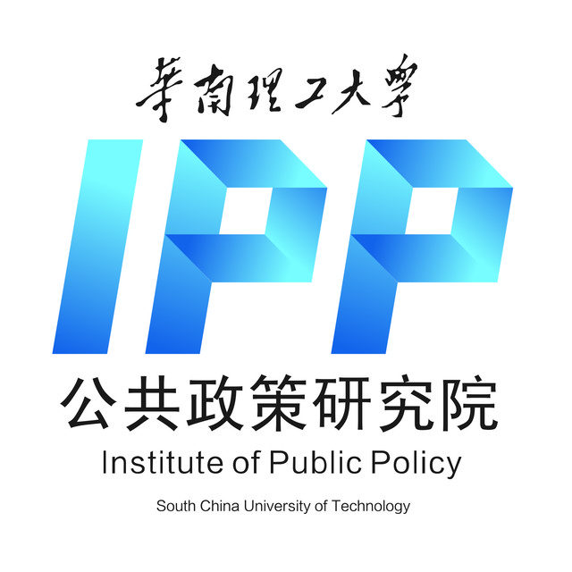

收录于合集
以下文章来源于IPP评论 ，作者郑永年
 IPP评论 .
华南理工大学公共政策研究院官方微信平台。 国际视野，中国情怀；扎根真实世界，回应中国问题。
IPP评论是郑永年教授领导的国家高端智库——华南理工大学公共政策研究院（IPP）官方微信平台。
** 改革开放以来，中国最主要的进步是制度上的进步。 尽管 制度是人确立的，但制度比人更可靠。**
**
**
就制度建设而言，中共十八届三中全会和四中全会出台的改革文件，无疑是中国改革开放以来最具有方向性的。无论就社会主义的市场经济，还是政治上的法治建设，两个文件不仅明确了制度发展的方向，也勾画出制度建设的具体轮廓。但一到执行领域，情况并不令人满意，而且在有些领域似乎正在失去方向。
很多年来，中国各级政府习惯于抓工程建设、国内生产总值（GDP）增长、意识形态工作，而对制度建设缺少经验。对一些党政官员来说，衡量他们成绩的，是诸如GDP增长那样可以加以量化的指标，而非制度建设。
从另一个角度来看，中国也一直没有确立以制度建设来衡量进步的标准。这或许是因为制度建设需要很长的时间，才能看到结果，不能以急功近利方式来进行。一些党政干部因此对制度建设没有多大的积极性。
实际上，制度是人类文明的积累。对任何国家尤其是对发展中国家来说，制度建设是一切，所有其他方面的进步必须以制度的进步来衡量。尽管 制度是人确立的，但制度比人更可靠 ；从历史上看，制度更是衡量政治人物政治遗产的最重要标准。制度化因此也是社会科学和政策研究界的永恒课题。
制度建设永远不会终结，包括民主制度。 美籍日裔学者法兰西斯·福山曾言，美国制度高度制度化，甚至是过度制度化，导致没有伸缩性。但其实不然，制度很容易遭人忽视甚至破坏。特朗普当选总统以来，福山不再持这样的观点，他甚至认为美国的制度正在失败或已经失败。
特朗普基本上把整个建制搁在一边，自己搞一套制度来运作。其后果正在显现出来，给整个社会带来了巨大的不确定性。再者，如果类似于特朗普那样的黑天鹅，飞进一个制度化不高或没有制度的国家，那么会产生什么样的结果？
福山也曾经拿中国和美国作比较，认为如果说美国过度制度化，那么中国制度化则远远不足。制度化不足也一直是西方担忧中国的不确定性的主要根源。但实践上并非如此，正是被西方视为具有最大不确定性的中国，自改革开放以来呈现出高度的确定性，而中国所具有的这种确定性，是以改革开放以来的制度建设作保障的。
改革开放以来，中国最主要的进步是制度上的进步。 西方说中国制度建设低水平，不确定性高。这不仅仅是因为西方人对中国制度进步的认识不足，也是因为中国方面的原因。如上所述，中国本身也忽视了以制度建设来衡量国家的进步。
自从中国近代传统王朝国家被西方一而再、再而三打败之后，中国的数代精英一直在寻找适合中国现实的制度建设。从晚清到孙中山再到国民党，其间因为内外部因素，制度建设经历了诸多失败。直到1949年中华人民共和国成立之后，中国才开始了没有外力干预的内部制度建设。
01
毛泽东制度建设有功
毛泽东一代的政治功劳，不仅仅在于他们统一了国家，更是确立了中国政治制度的基本构架。 今天中国运作的政治体制是毛泽东一代确立起来的。毛泽东的功劳是制度建设，而不是今天左派或极左派所说的，诸如“阶级斗争”“文革”“取消市场经济”“消灭资产阶级”等。
这些作为理想，毛泽东努力追求过，但没有在当时得到好的结果，也没有留下好的遗产。或者说，毛泽东思想中那些被左派追捧的部分，从来就没有在实践过程中实现过，而只是作为理想而存在。因此，只有到了困难时期，人们才会去怀念毛泽东；形势一好，人们（不管左派还是右派）就忘了他。
邓小平时代的制度进步尤其显著。 毛泽东时代，各种社会政治运动对毛泽东自己确立起来的制度，造成了巨大的冲击和破坏。邓小平一代经历了那个动荡的时代，因此把制度建设置于头等重要的位置。修改宪法、法制建设、领导干部任期制、年龄限制、集体领导体制、干部任用制度、基层治理等，今天我们所看到的制度，都是在邓小平时代确立起来的。
这也是邓小平的遗产持久影响力的制度保障。直到现在为止，人们可以讨论如何进一步改革或改进这些制度，但没有人可以轻易否定和取消这些制度。这些制度一旦被党政官员和大众所接受，便具有了自我生存能力。
邓小平之后， 1990年代，中国在制度建设上又有很大的进步。为了加入诸如世界贸易组织等国际组织，中国实行了“接轨”政策，即通过改革自身的制度，在制度层面和国际标准接轨。 进步尤其表现在经济方面，整个社会主义市场经济的制度构架，就是这个时期所确立的。同时，在政治上，1997年中共十五大把当时全国人大常委会委员长乔石力主的“法治”写入党和政府的文件，并把“法治”确立为政治制度建设的目标。
就经济发展而言，胡锦涛和温家宝时代成就很大。在这期间，中国的GDP翻了一倍。这个时期的经济增长，可以说是前一个时期制度建设的红利。同时，胡温时代也继续进行前一个时期已经开始的制度建设。不过， 这个时期最具有意义的制度建设发生在社会领域。 这是必然。1990年代主要议程是经济发展，社会领域不仅建设不足，而且遭到很大的破坏。
社会体制建设和社会政策是胡温时期开始的，包括普惠性的低保、社会保障等。 不过，在政治方面，这个时期制度建设不足。法治建设不仅没有进步，反而被新出现的“维稳系统”的阴影所笼罩。2008年世界性金融危机发生后，政府更是把精力投入到对付危机，而非制度改革。如果没有“维稳系统”的出现和2008年金融危机这两件事情，这会是个非常令人怀念的时代。
对制度建设的规划，中共十八大是一个重要的转折时期。十八大之后高层所提出的“四个全面”，即“全面实现小康社会”“全面深化改革”“全面依法治国”和“全面从严治党”，除了第一个“全面”是关于经济发展之外，都是关乎制度建设的。
1980年代中期，中共曾经设想全面的改革计划，协调经济改革和政治改革的关系。但1989年之后，改革不再具有全面性，而是有重点的局部突破。也就是说，十八大之前的诸多制度改革大都是局部和零星的，没有系统性。
**
**
正如“四个全面”所示，十八大以来改革的最主要特点就是“全面”，“全面”就是“系统”。 十八大三中全会所通过的《关于全面深化改革若干重大问题的决定》，是对“社会主义市场经济”的制度细化，四中全会所通过的《关于全面推进依法治国若干重大问题的决定》，可以说是系统的政治改革计划（尽管没有使用政治改革的概念），而六中全会所通过的《关于新形势下党内政治生活的若干准则》和《中国共产党党内监督条例》两个文件，则是对执政党本身的系统改革计划。
**
**
02
为制度建设提供条件
尽管外界关切的焦点在于中国轰轰烈烈的反腐败运动和经济的新常态，但如果站在未来的立场来看，十八大以来最主要的进步也在制度。 甚至可以说，无论是大规模的反腐败运动还是经济新常态，都是为其他方面的制度建设提供环境和条件。当GDP主义盛行的时候，制度建设很难提上议事日程；同样，当腐败盛行的时候，政治体制和执政党本身的体制建设，很难提到议事日程上来。
就拿最为棘手和敏感的法治领域来说，制度进步也是明显的。正如前面所说，中共十五大就正式提出了“法治”的概念，但在此后的很长时间里，并没有转化成为制度建设。在有些时候，出现停顿甚至倒退现象（例如维稳系统的正式确立）。 在中国的政治背景中，法治的困难在于党和法之间的关联。
西方和中国本身的很多人认为法治必然和多党制联系起来，或者说，一党统治下很难实现法治。当然，这个假设并不符合经验，因为很多一党独大的体制，例如日本和新加坡都发展出了健全的法治体制。
十八大之后，中国也开始从制度层面积极探索法治建设。在司法层面，这些努力包括建立跨区域法院、巡回法庭、司法专业主义、领导干部干预司法终身问责制等。这些制度设计至少要达到两个目标，即领导人不得随意干预司法和司法的相对独立，尤其是要消除历史上一直盛行的司法地方主义。
在反腐败方面，在短短的几年时间里，已经从制度层面消除了机构和权力过于分散、部门主义和地方主义（自己的腐败自己反）丛生等现象，把权力集中在中纪委手中，中央各部委、省政府的腐败案件由中纪委直接来处理。在这一步完成之后，又开始了第二步，即建立国家监察委员会。
监察委建设至少有几个主要目的 。第一，通过整合和协调中纪委和监察委，把党的政治权力转化成为国家权力。第二，有效制衡政府的行政权力。从前监察部分是政府的一个部分，这就为反政府部门的腐败制造了困难，如果不是使得反腐败成为不可能的话。现在监察委的权力来自于全国人大，而非政府。这使得监察委具有了独立于行政部门的权力。实际上，监察权的设计类似于早期孙中山所设想的“五权宪法”中的监察权。
第三，反腐败的效率。监察委整合了从前分散于各个部门的相关权力（即行政监察、预防腐败和监察机关查处贪污贿赂、失职渎职以及预防职务犯罪等机构），这减少了部门主义和地方主义，使得监察和反腐败更加有效。
制度进步并不表明中国的制度建设已经完成。在很多方面，例如如何处理核心与党内民主、核心与集体领导之间的制度关系，党内民主与社会民主之间的关系、党的领导和法治之间的关系等，都存在着巨大的空间，需要进一步的探索。同时，任何一项制度建设也不是可以一蹴而就的。
在制度建设过程中，也会有反复。在一些领域，制度建设往往迁就于意识形态和政治上的考量。制度建设是人来执行的，在执行过程中，执行者往往失去制度建设的大局观，而让局部利益观占据主导地位。
不管如何，制度建设的大方向是明确的。中国人常说，“铁打的营盘，流水的兵”。制度就是营盘，而官员和老百姓都是生活在制度之下的兵。一个政权的生命力之所在，就在于不断的制度建设和更新。由此而言， 任何一个领导人或领导层的历史遗产，就是他们所塑造的制度。没有制度建设，就没有持久的遗产。
＊本文作者系华南理工大学公共政策研究院（微信ID：IPP- REVIEW）学术委员会主席郑永年教授。文章发表于2017年2月14日《联合早报》。编辑：IPP传播。
关于IPP
华南理工大学公共政策研究院（IPP）是一个独立、非营利性的知识创新与公共政策研究平台。由华南理工大学校友莫道明先生捐资创建。IPP拥有一支以郑永年教授为领军的研究团队，围绕中国的体制改革、社会政策、中国话语权与国际关系等开展一系列的研究工作，并在此基础上形成知识创新和政策咨询协调发展的良好格局。IPP的愿景是打造开放式的知识创新和政策研究平台，成为领先世界的中国智库。
微信ID：IPP-REVIEW
国家高端智库
中国情怀 国际视野